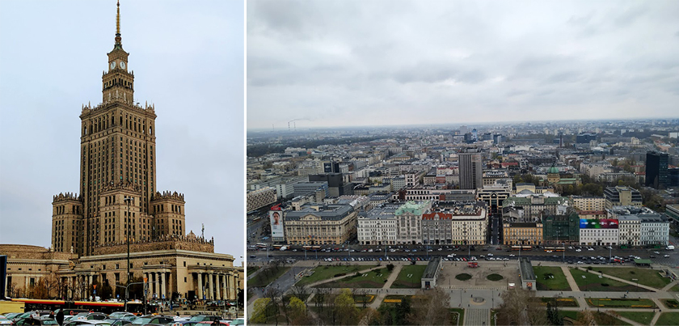
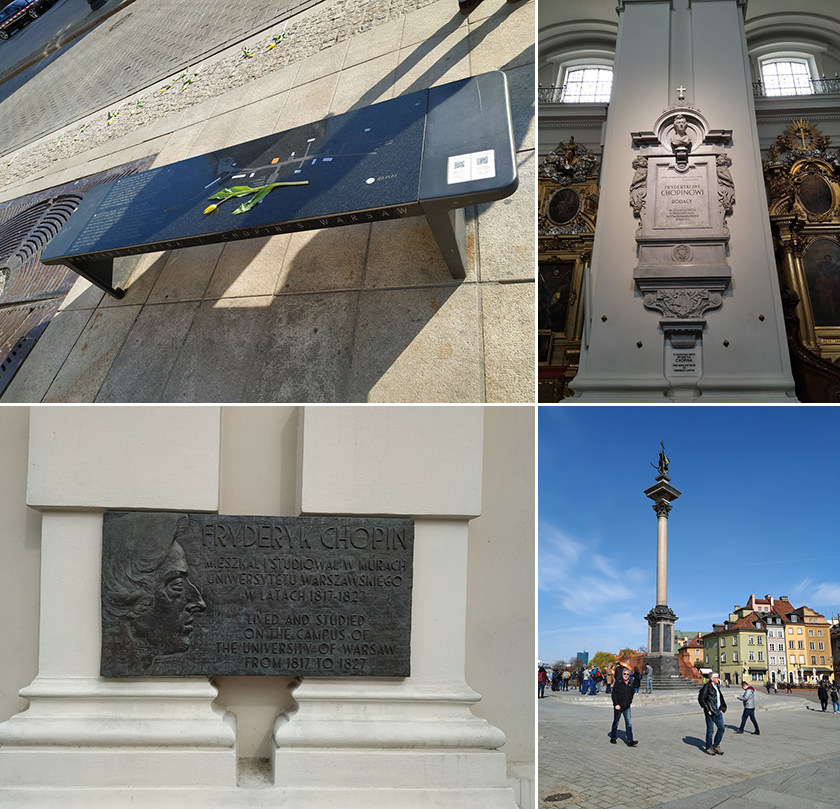
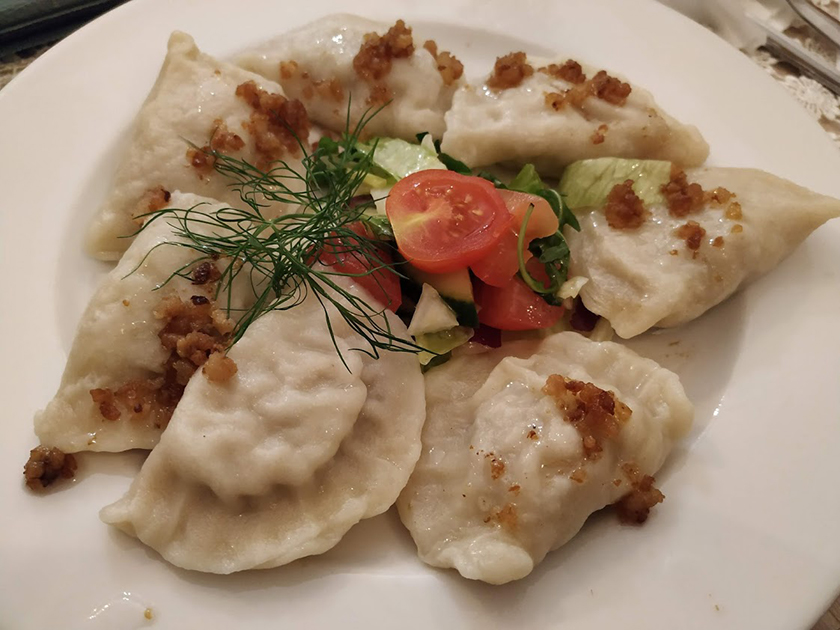
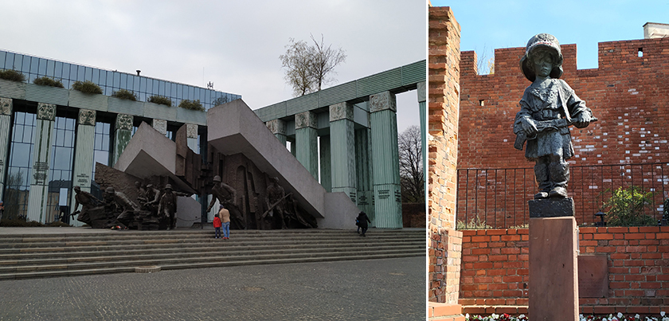
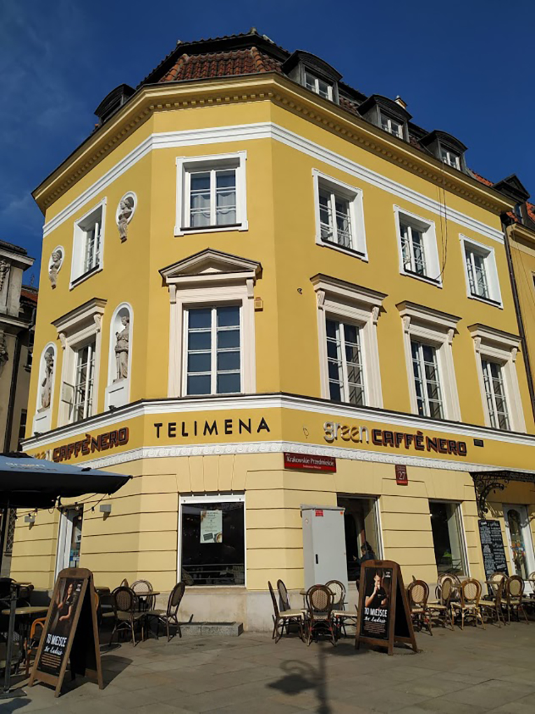
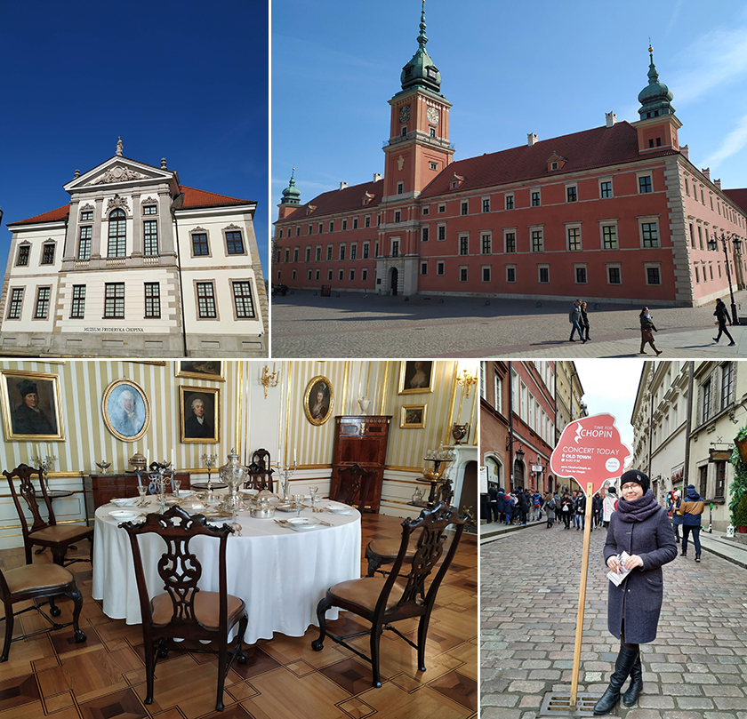

|  |
去年春天到訪波蘭的第一個週末，夥伴們決定到首都華沙一遊。很幸運的是同行的詹姆士哥能一手包辦導遊服務，帶著我跟伶姊輕鬆走跳華沙。我們出了中央車站立刻被一棟看似富麗堂皇的建築物吸引，其上還有精雕細刻的裝飾，這是由蘇聯建築師設計，建於1955年的華沙科學文化宮，是波蘭最高的建築，也是我們此行程的第一站。據說華沙人認為建築不太美觀，還戲稱它是「史達林的禮物」，但畢竟這是蘇聯和波蘭曾經友好的象徵。我們買票搭電梯上30樓的觀景台，整個華沙盡收眼底。
|  |
接著徒步往老城區前進。人行道上看似不起眼的長椅，其實暗藏玄機，按下按鍵便流瀉出鋼琴詩人蕭邦的音樂，感覺大師並沒有走遠。蕭邦39歲病逝巴黎，遺願是希望心臟可以運回祖國波蘭，就封在聖十字教堂左手邊第二根柱子，下方大理石寫著“HERE RESTS THE HEART OF FREDERICK CHOPIN”。令人疑惑為什麼只有心臟回來呢…？不過這沒有答案。教堂對面是華沙大學，曾被評為世界五百強大學，門口有個小牌子刻有蕭邦的側面肖像，寫著蕭邦在1817-1827年間曾在校園中念書及居住。繼續前進到了老城區入口—城堡廣場，映入眼簾的是經典醒目的西吉斯蒙德圓柱，及色彩鮮豔的文藝復興時期的建築風格，我看到一種蘊藏在不規則裡的生氣蓬勃，讓睽違多年再訪歐洲的我雀躍不已。
|  |
同行的夥伴腳力真是了得，走了數小時終於發現還沒吃午餐，此時雖已下午三點多，很多餐廳仍然一位難求，我們選了一家波蘭餃子館。水餃是到波蘭必嘗試的食物，到處都有餃子店，而且種類超多樣，只是吃完頗為失望，餃子皮太厚，豬肉餡吃起來綿綿軟軟的沒有絞肉的口感，倒有點像鮪魚罐頭，感想是台灣水餃完勝。
|  |
吃飽喝足之後繼續上路，參觀了建於16世紀的舊城防禦牆，當時瑞典攻打波蘭還起了一點小作用。防禦牆附近有個小型紀念碑，緬懷所有參與華沙起義的孩子，在很小年紀就拿槍與納粹德軍戰鬥。我們很幸運地跟上一團已經進行一半的城市導覽，當地解說員帶大夥兒看了華沙起義紀念碑也說歷史故事—紀念二戰時參與起義的英雄們以有限的武器和納粹德軍纏鬥了63天，蘇聯先前承諾的軍事援助既沒有兌現，還停止了對華沙周圍的德軍的進攻，導致波蘭在毫無外援之下戰敗了，德軍為了報復華沙起義行動，把波蘭市民驅逐到勞動營或集中營，並且幾乎把城市夷為平地。戰後許多人原本以為華沙就從此灰飛煙滅，然而，不屈不撓的波蘭人重建家園，花了五年時間讓城市不僅僅浴火重生，還恢復成17-18世紀的古典樣貌。在華沙的許多教堂、博物館前面會放有一張二戰後的黑白照，照片裡是戰火蹂躪之下的殘垣斷瓦，與重建後矗立在眼前的建築物樣貌，強烈的今昔對比，一磚一瓦裡面盡是文化、是信念、是堅毅、是尊嚴，過往的悲情昇華，如今以一種雍容大度的姿態迎接絡繹不絕的遊客。
|  |
翌日，延續著前一天看到古典老城區的興奮，我拉著伶姐又往老城區晃去，我們在Telimena喝咖啡，看著牆上的圖片才知道蕭邦在1830年離開波蘭前的最後一杯咖啡在這裡喝的，真巧，這是個隨處可遇到蕭邦的城市。
|  |
位於老城入口處的皇家城堡從16世紀末開始就是波蘭君主居住的地方，後來波蘭被列強侵略瓜分，城堡也遭受瑞典、德國、俄羅斯等軍隊的掠奪與破壞。現在改為博物館，我們參觀了波蘭曆任王朝統治者的珍貴寶物及精美華麗的皇室收藏。另外在華沙絕對不能錯過的是蕭邦博物館，由於導遊詹姆士哥昨日身體微恙已先行告退，我跟伶姐鬼打牆似地找路問路也終於讓我們走到了，沿路居然連指標都沒有。館內展示鋼琴詩人蕭邦彈過的鋼琴、巴黎生活、與情人喬治桑的書信等等，可惜39歲就因肺結核病逝，年輕的生命創造出的音樂自然流暢又扣人心弦，我都覺得此曲只應天上有，人間能得幾回聞哪。蕭邦幾乎就是華沙的精神象徵，在老城區每天都可看到蕭邦音樂會的廣告立牌、著名的瓦金基公園在蕭邦紀念碑前經常舉辦免費的蕭邦音樂會，蕭邦留給城市的資產就是豐富的藝文饗宴，滋潤了來往旅人乾涸的心靈。
匆匆兩天的時間在不停行走的腳下飛逝，我對中古時期歐洲的建築非常喜愛，在老城的廣場與巷弄間來回走了無數遍而遊興未減，回首華沙的歷史盡是斑斑血淚也曾經奄奄一息，到如今熠熠生輝，悲傷的歷史成為滋養她的養分卻不束縛也不框限發展，如浴火鳳凰般重生的城市給我的啟示就是信念決定一切，行動成就一切。在回程的火車上，望著窗外迅速倒退的樹影，蕭邦的音符依然縈繞在我的腦海……